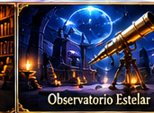
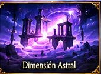
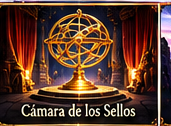

Guardián activo: Hamal

El primer sello
Investigá la desaparición de Aries. Tus decisiones revelan pistas.

El eco de Aldebarán
Investigá el segundo sello y elegí en quién confiar.
Los espejos de Pólux
Descifrá la conspiración de los manuscritos gemelos.

El sello de Cáncer
Continuá la guerra de los doce sellos y descubrí la conspiración astral.

El sello de Leo
Continuá la guerra de los doce sellos y descubrí la conspiración astral.

El sello de Virgo
Continuá la guerra de los doce sellos y descubrí la conspiración astral.

El sello de Libra
Continuá la guerra de los doce sellos y descubrí la conspiración astral.

El sello de Escorpio
Continuá la guerra de los doce sellos y descubrí la conspiración astral.

El sello de Sagitario
Continuá la guerra de los doce sellos y descubrí la conspiración astral.

El sello de Capricornio
Continuá la guerra de los doce sellos y descubrí la conspiración astral.

El sello de Acuario
Continuá la guerra de los doce sellos y descubrí la conspiración astral.

El sello de Piscis
Continuá la guerra de los doce sellos y descubrí la conspiración astral.

Los doce Guardianes
Elegí, entrená y evolucioná a tu compañero astral.

Nube astral
Guardá y recuperá tu partida con una cuenta personal.
Misiones y logros
Completá desafíos diarios, ganá experiencia y desbloqueá logros.

Inventario astral
Reuní fragmentos y restaurá reliquias antiguas.

El Presagio
Horóscopo, decisiones, recompensa diaria y tarjeta para compartir.